SCTP端点发送该数据块向其对端点通知一些特定的差错情况。该数据块中可以包含一个或多个差错原因。一般操作差错不一定被看作是致命的，致命差错情况的报告一般使用ABORT数据块。
原因编码 (16bit无符号整数)：
定义了被报告的差错情况的类型。
| 原因编码 | 描述 |
|---|---|
| 1 | 无效的流标识符 |
| 2 | 丢失必备参数 |
| 3 | 过期的Cookie差错 |
| 4 | 资源耗尽 |
| 5 | 无法解析的地址 |
| 6 | 不识别的数据块类型 |
| 7 | 无效的必备参数 |
| 8 | 不识别的参数 |
| 9 | 无用户数据 |
| 10 | 关闭阶段收到COOKIE |
| 11 | 使用新的地址重新启动偶联 |
| 原因编码 | 含义 | 字段格式 |
|---|---|---|
| 1 | 无效的流标识符 | 差错原因无效的流识别符用来指示端点收到了一个关于不存在的流的DATA数据块。 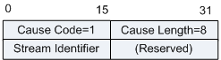
|
| 2 | 丢失必备参数 | 丢失必备参数差错原因用来指示一个或多个必备的参数在收到的INIT或INIT ACK数据块中丢失。 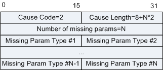
|
| 3 | 过期的Cookie差错 | 过期的COOKIE差错原因参数用来指示收到的有效的State Cookie已经过期了。 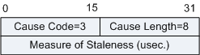
|
| 4 | 资源耗尽 | 资源耗尽差错原因用来指示发送方的资源已经耗尽，通常情况下该查错原因与ABORT数据块一起发送。 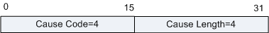 |
| 5 | 不可解析的地址 | U不可解析的地址用来指示发送方不能解析特定的地址参数(即发送方不支持该类地址类型)，通常情况下该查错原因与ABORT数据块一起发送。 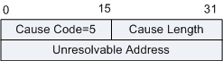
|
| 6 | 不识别的数据块类型 | 如果接收方不理解数据块且数据块类型比特中的高位比特设为1，则把不识别的数据块类型错误返回给数据块的产生者 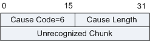
|
| 7 | 无效的必备参数 | 当一个必备参数被设置成无效值时，则向INIT或INITACK的生成者返回无效的必备参数差错。 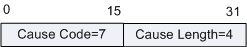 |
| 8 | 不识别的参数 | 如果接收方不能识别INIT ACK数据块中一个或多个任选参数，则向INIT ACK数据块的产生者返回不识别的参数的差错原因。 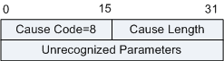
|
| 9 | 无用户数据 | 如果收到的DATA数据块中未包含用户数据，则把这个差错原因返回给DATA数据块的产生者。 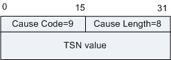
|
| 10 | 关闭期间收到Cookie | 当端点处于SHUTDOWN-ACK-SENT状态时，又收到COOKIE ECHO时则发送该差错原因。返回这个差错原因的ERROR数据块通常与重发的SHUTDOWN ACK数据块捆绑在一起发送。 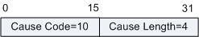 |
| 11 | 使用新地址重新启动偶联 | 当在现存的偶联上收到了COOKIE ECHO数据块，而COOKIE ECHO数据块又向该偶联中增加了先前没有的地址，此时使用该错误原因，并把新增加的地址作为差错信息在该参数中传送，这个差错原因通常都在ABORT中发送，用来拒绝COOKIE ECHO数据块。 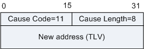 |
| 标准 | 描述 |
|---|---|
| RFC 2960 | Stream Control Transmission Protocol |